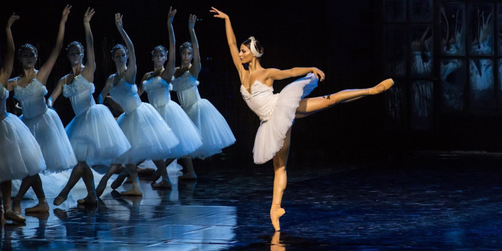

Το μπαλέτο είναι είδος χορού, με καταγωγή από την Ιταλία, το οποίο αργότερα εξελίχθηκε στη σκηνική του μορφή, κυρίως στη Γαλλία και τη Ρωσία. Στην πρώτη μορφή του απουσίαζε η χρήση σκηνικών και λάμβανε χώρα σε μεγάλες αίθουσες συναθροίσεων, όπου οι θεατές καταλάμβαναν τις θέσεις μπροστά και εκατέρωθεν της σκηνής. Έκτοτε έχει εξελιχθεί σε είδος χορού υψηλών τεχνικών απαιτήσεων, με δική του ορολογία και δομική σύσταση. Η μουσική συνοδεία είναι κατά κύριο λόγο από το ρεπερτόριο της κλασικής μουσικής.
Η πιο γνωστή και δημοφιλής απόχρωση του μπαλέτου είναι αυτή που αναπτύχθηκε την εποχή του Ρομαντισμού (το λεγόμενο Ballet blanc =λευκό μπαλέτο), κατά την οποία το βάρος πίπτει στην κορυφαία του χορού (τη λεγόμενη πρίμα μπαλαρίνα), που ως πρωταγωνιστικός ρόλος αποκλείει την ανάδειξη σχεδόν όλων των άλλων. Καλείται να εκτελέσει δύσκολες τεχνικές, που περιλαμβάνουν κατακόρυφη κίνηση στηριζόμενη στα δάκτυλα του ποδιού (en pointe), πιρουέτες και λοιπές ακροβατικές κινήσεις δεξιοτεχνίας, ενώ έχει καθιερωθεί η ένδυσή της με τη λεγόμενη γαλλική τουτού (κοντό φόρεμα από λευκό τούλι που αφήνει εκτεθειμένους τους μηρούς και επιτρέπει έτσι την ελευθερία κινήσεων). Η εξέλιξη του μπαλέτου περιλαμβάνει τα είδη του εξπρεσιονιστικού και νεοκλασικού μπαλέτου, αλλά και στοιχεία του σύγχρονου χορού.
Η λέξη balletto προέρχεται από τη ιταλική γλώσσα,, στην οποία είναι υποκοριστικό της λέξης ballo(εξ ου και μπάλος στα ελληνικά), που σημαίνει χορός, και που με τη σειρά της ανάγεται στη λατινική λέξη ballo ή ballare, που σημαίνει χορεύω. Η λατινική αποτελεί παραφθορά του ελληνικού ρήματος βαλλίζω, που έχει ταυτόσημη σημασία.
Στις απαρχές του μπαλέτου κατά την Ιταλική Αναγέννηση, ο εν λόγω χορός αποτέλεσε χορευτική παράφραση της ξιφασκίας. Σύντομα εξήχθη στη γαλλική αυλή της Αικατερίνης των Μεδίκων, ενώ επί Λουδοβίκου ΙΔ΄ τα επί μέρους στοιχεία του καθορίστηκαν από τον Πιέρ Μπωσάν (Pierre Beauchamp). Το 1661 ιδρύεται ο πρώτος χορευτικός θίασος (το λεγόμενο Corps de ballet), το Μπαλέτο της Όπερας των Παρισίων (Ballet de l'Opéra de Paris), ως παράρτημα στη Βασιλική Ακαδημία Χορού (Académie Royale de la Danse). Στην «καθέλκυση» αυτή οφείλεται και η ευρεία χρήση της γαλλικής γλώσσας στο λεξιλόγιο του μπαλέτου. Στον 18ο αιώνα, παρά τις μεταρρυθμίσεις του Ζαν-Ζωρζ Νοβέρ, το μπαλέτο εξέπεσε σε παρακμή στη Γαλλία μετά το 1830, ωστόσο συνεχίστηκε στην Ιταλία, τη Ρωσία και τη Δανία. Επιστρέφει στο ευρωπαϊκό προσκήνιο λίγο πριν τον Α΄Παγκόσμιο Πόλεμο, μέσω ενός ρωσικού θιάσου, τα περίφημα πλέον Ρωσικά Μπαλέτα του Σεργκέι Ντιάγκιλεφ. Ο εν λόγω θίασος αποτέλεσε καταφύγιο για πολλούς Ρώσους χορευτές, σε μια εποχή που η ανησυχία και η πείνα ήταν σε έξαρση, αποτέλεσμα και της Οκτωβριανής Επανάστασης των Μπολσεβίκων. Μαζί τους μεταλαμπάδευσαν στη Δυτική Ευρώπη τους χορογραφικούς και υφολογικούς νεωτερισμούς, που άνθιζαν άλλοτε υπό τη βασιλεία των Τσάρων.
Τον 20ό αιώνα, το μπαλέτο αποτελεί μείζονα παράγοντα επιρροής στο πλαίσιο του σκηνικού χορού γενικότερα, και ταυτόχρονα διευρύνει τα υφολογικά του στοιχεία. Ο Αμερικανός χορογράφος George Balanchine εδραιώνει αυτό που πλέον αναγνωρίζεται ως νεοκλασικό μπαλέτο, ενώ περαιτέρω εξελίξεις περιλαμβάνουν τον σύγχρονο χορό, το μετα-στρουκτουραλιστικό μπαλέτο, όπως κυρίως εκφράζεται μέσα από το έργο του Αμερικανού William Forsythe, ο οποίος εδρεύει στη Γερμανία.
Το κλασικό μπαλέτο θεωρείται ως το πλέον δομημένο από τα είδη μπαλέτου, καθώς έχει ως βάση τις παραδοσιακές χορευτικές τεχνικές. Οι παραλλαγές του έχουν καθοριστεί μέσα από διάφορες σχολές, όπως τη Γαλλική Σχολή, τη Δανέζικη Σχολή Bournonville, την Ιταλική Σχολή και τη Ρωσική Σχολή. Τα βασικά στοιχεία αμφότερων των δύο τελευταίων εκφράζονται εν πολλοίς στη διδακτική μεθοδολογία του Ιταλού χορογράφου και θεωρητικού Κάρλο Μπλάσις. Πλάι στις δύο κυριότερες Σχολές, τη Γαλλική και τη Ρωσική, αξιομνημόνευτες θεωρούνται η Σχολή Balanchine της Νέας Υόρκης και στην Αγγλία η Βασιλική Ακαδημία Χορού και το Βασιλικό Μπαλέτο, που βασίζονται στη μέθοδο Cecchetti. Οι δε πρώτες πουέντ ήταν στην πραγματικότητα παπούτσια χορού (κοινώς λεγόμενες και μπαλαρίνες) με ενισχυμένη μύτη, ώστε η μπαλαρίνα να μπορεί να σταθεί στα ακροδάκτυλα, δίνοντας την εντύπωση ότι αιωρείται.
Σήμερα, υπάρχουν τρία διαφορετικά είδη παπουτσιών για το μπαλέτο. Το πρώτο είναι οι κλασσικές μπαλαρίνες όπου είναι απαραίτητες για όλες τις μπαλαρίνες. Στη συνέχεια είναι τα καρακτέρ (charactères) όπου συνήθως τα φορούν οι μπαλαρίνες οι οποίες συμπλήρωσαν τα πρώτα έτη διδασκαλίας και τέλος, είναι τα πουέντ (Pointe) που συνήθως χρησιμοποιούνται σε υψηλότερο επίπεδο διδασκαλίας.
Ορισμένοι βασικοί κανόνες του κλασικού μπαλέτου:
1.Η ποζισιόν (θέση) πλιέ (plié) χρησιμοποιείται σε όλες σχεδόν τις ασκήσεις.
2.Όταν τα πόδια δεν πατούν στο έδαφος, είναι πάντα τεντωμένα στις μύτες.
3.Όταν το πόδι δεν είναι λυγισμένο, πρέπει να είναι εντελώς τεντωμένο.
4.Ζωτικής σημασίας είναι η στάση του σώματος, η ευθυγράμμιση και η τοποθέτηση.
5.Ο πλήρης έλεγχος των κινήσεων ολόκληρου του σώματος.